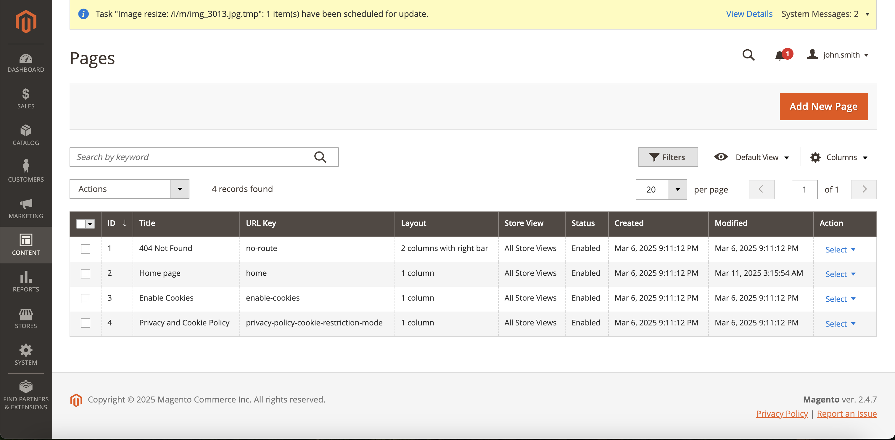
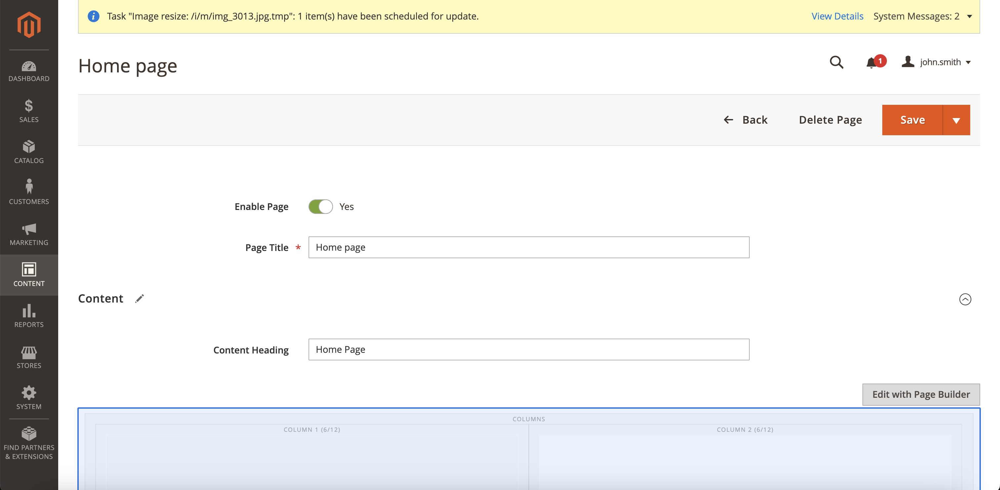
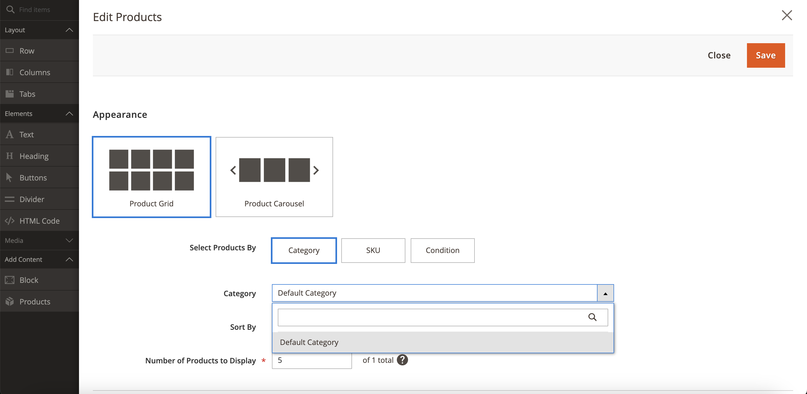
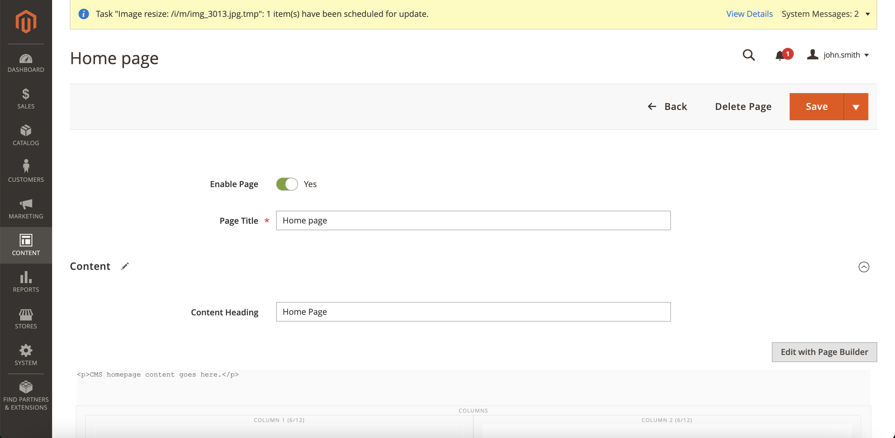

📌 開発環境のセットアップ
このドキュメントでは、ローカルマシンに開発環境をセットアップする手順を説明します。この開発環境はMark Shust氏のDocker設定を基にしています。
📌 前提条件
- Dockerがローカルマシンにインストールされていること。
- Dockerが十分なリソースで実行できるように設定してください（CPU、RAM、Swapを設定の半分程度に割り当てるのがおすすめです）。
- Magento Marketplaceのアカウントにアクセスできること。
📌 クイックスタート
- ブラウザでアクセスキーの準備をしてください。リンクはこちら
- ターミナルを開き、
./setupを実行します。 - 途中で、公開鍵を
username、秘密鍵をpasswordとして入力してください。 - 実行中にマシンのパスワード入力を求められる場合があります。
- セットアップが終了したら、https://magento.test を開いてください。
- セットアップ後、ターミナルで
./runを実行すれば開発環境が起動します。
詳しくは Magentoストアのセットアップ をご覧ください。
📌 Magentoアカウントの設定
Magentoのアカウントを取得したら、こちらでアクセスキーを作成します。公開鍵と秘密鍵を取得したら、それを~/.composer/auth.jsonに設定します。
{
"http-basic": {
"repo.magento.com": {
"username": "公開鍵",
"password": "秘密鍵"
}
}
}
📌 Ngrokの設定
Komojuは取引状況の更新をWebhookで通知するため、開発環境をインターネット上で公開する必要があります。そのための最も簡単な方法がNgrokです。できれば固定のアドレスを使うことをおすすめします（Magentoの設定を毎回変更しなくて済みます）。
安定したアドレスを用意したら、以下のコマンドでNgrokを起動します。
$ ~/ngrok http 443 <Ngrokエンドポイント>
例えば、サイトが https://degicaexample.au.ngrok.io で動作する場合は、以下のようになります。
~/ngrok http 443 -region au --subdomain=degicaexample
📌 Dockerの実行
注意: 以下のコマンドは初回のみ必要です。設定が完了した後は、bin/startとbin/stopを使用してMagento開発環境を起動・停止できます。
📌 Docker環境のビルド
以下のコマンドでDocker環境を作成します。
$ docker-compose build --build-arg MAGENTO_VERSION=$MAGENTO_VERSION
# $MAGENTO_VERSION は使用したいMagentoのバージョンです。
# 例として、2.3.4を使用する場合は以下のようになります:
# docker-compose build --build-arg MAGENTO_VERSION=2.3.4
Dockerコンテナのビルドが終わったら、以下のセットアップコマンドを実行してMagentoを構成します。
$ bin/setup $NGROK_DOMAIN
ここで、$NGROK_DOMAINは前の手順で設定したNgrokエンドポイント（https://部分を除く）です。例えば、https://degicaexample.au.ngrok.ioを使用する場合は、以下のようになります。
$ bin/setup degicaexample.au.ngrok.io
実行が完了すると、Magentoのウェブサイトは指定したNgrokエンドポイントで利用可能になります。
📌 Magentoストアのセットアップ
プラグインの変更をテストするためには、商品を登録して販売可能にし、Komojuと正しく通信できるようプラグインを設定する必要があります。これにはまず管理画面にログインします。
📌 管理画面へのログイン
💡 注：このガイドでは、MagentoストアのURLは https://magento.test と仮定しています。
- 管理画面を開きます。
ここで要求される管理者用の認証情報はENVファイルに記載されています。
📌 ストアに商品を追加する
管理画面内で、左メニューの「Catalog」をクリックし、「Add Product」ボタンを押します。以下のフィールドも必ず設定してください。
- Categories: 商品には少なくとも1つカテゴリを指定
- Quantity: テスト中に在庫切れにならないように十分な数を設定（例: 1000）
- Stock Status: 「In Stock」に設定
📌 通貨の設定
ストア通貨が JPY（日本円） に設定されていることを確認してください。
-
管理画面で「ストア (Store) > 設定 (Configuration) > 一般 (General)」に移動し、国を「日本 (Japan)」に設定します。許可された国に日本が含まれていることを必ず確認してください。

-
「ストア (Store) > 設定 (Configuration) > 通貨設定 (Currency Setup)」に移動し、通貨を「JPY（日本円）」に設定します。許可された通貨にJPYが含まれていることを必ず確認してください。

📌 商品の追加手順（ステップバイステップ）
-
管理画面で「カタログ (Catalog) > 商品 (Products)」に移動し、「商品を追加 (Add Product)」 をクリックします。

-
必要事項を入力します。「商品名 (Product Name)」、「SKU」、「価格 (Price)」、「数量 (Quantity)」、「カテゴリ (Category)」は必須項目です。また任意で商品画像を追加できます。

-
「コンテンツ (Content) > ページ (Pages)」に移動し、編集したいページ（例：ホームページ）の横の 「アクション (Action)」>「選択 (Select)」>「編集 (Edit)」 をクリックします。 
-
「ページビルダーで編集 (Edit with Page Builder)」 をクリックします。 
-
「カラム (Columns)」 や 「行 (Row)」 をドラッグ＆ドロップで追加し、さらに 「商品 (Product)」 を追加します。商品追加後、商品の設定をするために歯車アイコンをクリックします。

-
表示したい商品のカテゴリを設定します。（手順2で設定した商品カテゴリと同じものを設定してください） 
-
右上の 「×」 ボタンで設定画面を閉じ、最後に 「保存 (Save)」 をクリックします。 
-
重要
./indexをターミナルで実行してページを更新します。 - 以上で完了です！

📌 プラグインの設定
- 管理画面で、左メニューの「Stores」をクリックし、「Configuration」を選択します。
- Configurationページに移動後、左側の「General」メニューをスクロールして「Sales」セクションを展開し、「Payment Methods」をクリックします。
- Komojuの横にある「Configure」をクリックして、プラグインを設定します。
- 必要なKomojuアカウントの情報を入力します。